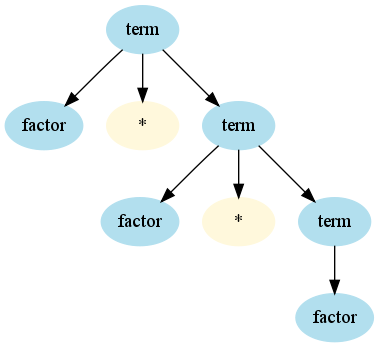
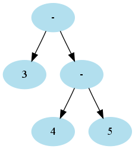

Copyright © Cay S. Horstmann 2015 
This work is licensed under a Creative Commons Attribution 4.0 International License
class" "3.14" "(" termterm ::= factor * term
term ::= factor
term ::= factor * term ::= factor * factor * term ::= factor * factor * factor

~|rep(...)opt(...)class SimpleLanguageParser extends JavaTokenParsers {
def expr: Parser[Any] = term ~ opt(("+" | "-") ~ expr)
def term: Parser[Any] = factor ~ opt(("*" | "/" ) ~ term)
def factor: Parser[Any] = wholeNumber | "(" ~ expr ~ ")"
}
Parser[Any] with something more useful lateropt(P) returns Option: Some of the result of P, or Nonerep(P) returns List of the results of PP ~ Q returns instance of class ~ (similar to a pair)val parser = new SimpleLanguageParser val result = parser.parse(parser.expr, "3 - 4 * 5")
sets result to
((3~None)~Some((-~((4~Some((*~(5~None))))~None))))
^^ operator to transform. For example,
wholeNumber ^^ (_.toDouble)
def expr: Parser[Double] = (term ~ opt(("+" | "-") ~ expr)) ^^ {
case a ~ None => a
case a ~ Some("+" ~ b) => a + b
case a ~ Some("-" ~ b) => a - b
}
~>, <~ to discard tokens
def factor: Parser[Double] = wholeNumber ^^ (_.toDouble) |
"(" ~> expr <~ ")"
Parser[...] type must match the return type of the transforms (here, Double)Double works if we interpret an arithmetic expression without variablesParser[Expr]
class Expr case class Number(value : Int) extends Expr case class Variable(name : String) extends Expr case class Sum(left : Expr, right : Expr) extends Expr
class SimpleLanguageParser extends JavaTokenParsers {
def expr: Parser[Expr] = (term ~ opt(("+" | "-") ~ expr)) ^^ {
case a ~ None => a
case a ~ Some("+" ~ b) => Sum(a, b)
case a ~ Some("-" ~ b) => Difference(a, b)
}
...
}
Difference(Number(3),Product(Number(4),Number(5)))
3 - 4 - 5expr ::= term - expr ::= term - term - expr

expr and term?expr ::= expr - term ::= expr - expr - term :: expr - expr - expr - term
class SimpleLanguageParser extends JavaTokenParsers {
def expr: Parser[Expr] = term ~ rep(("+" | "-") ~ term)
def term: Parser[Expr] = factor ~ rep(("*" | "/" ) ~ factor)
def factor: Parser[Expr] = wholeNumber | "(" ~ expr ~ ")"
}
Operator(Operator(...(Operator(term1, term2), term3)), ...)
foldLeft—see next slide
3 ~ List("-" ~ 4, "-" ~ 5)
- / \ - 5 / \ 3 4
"-" ~ 4case (x, "+" ~ y) => Sum(x, y) case (x, "-" ~ y) => Difference(x, y)
def expr: Parser[Expr] = (term ~ rep(("+" | "-") ~ term)) ^^ {
case a ~ lst => a.foldLeft(lst) {
case (x, "+" ~ y) => Sum(x, y)
case (x, "-" ~ y) => Difference(x, y)
}
Expr with the correct structure[10][10][20]rep convenience combinator
def bounds = rep(bound)
bound = "[" ~> wholeNumber <~ "]" ^^ { _.toInt }
id(arg1, arg2, ...)repsep convenience combinator
def funcall = ident ~ "(" ~> repsep(expr, ",") <~ ")"
repsep returns List without separators; here, List[Expr]

unit12. Right-click on the project in the tree display at the left, select Properties → Java Build Path → Libraries → Add External JARs, then locate to the directory where the Scala IDE is installed, go to its plugins directory, and pick org.scala-lang.modules.scala-parser-combinators_1.0.1.jar.expr.sc. Paste in this code:
import scala.util.parsing.combinator._
class ExprParser extends JavaTokenParsers {
def expr: Parser[Any] = term ~ rep(("+" | "-") ~ term)
def term: Parser[Any] = factor ~ rep("*" ~> factor)
def factor: Parser[Any] = wholeNumber | "(" ~ expr ~ ")"
}
val parser = new ExprParser
parser.parseAll(parser.expr, "3-4*5")
What do you get?ExprParser class and call it ExprParser2. Change all the Parser[Any] to Parser[Int]. Now you need to put ^^ transforms behind each result. I'll give you two of them:
... (term ~ rep(("+" | "-") ~ term)) ^^ {
case a ~ lst => (lst.foldLeft(a)) {
case (x, "+" ~ y) => Sum(x, y)
case (x, "-" ~ y) => Difference(x, y)
}
... wholeNumber ^^ { _.toInt }
Figure out the other two.val parser2 = new ExprParser2 parser2.parseAll(parser2.expr, "3-4*5")What happens?
class Expr case class Number(value : Int) extends Expr case class Sum(left : Expr, right : Expr) extends Expr case class Difference(left : Expr, right : Expr) extends Expr case class Product(left : Expr, right : Expr) extends ExprNow we want to make a
Parser[Expr], not a Parser[Int]. So, change all the return types and change the ^^ expressions to yield instances of Expr subclasses. I'll give you one:
...factor ~ rep("*" ~> factor) ^^ {
case f ~ r => f.foldLeft(r)(Product(_, _))
}
val parser3 = new ExprParser3 arser3.parseAll(parser3.expr, "3-4*5")
[{"balance" : 10000}, "Harry", true]
Check out the JSON web site. It uses “railroad diagrams” to show the JSON syntax. It's trivial to turn them into a parser:
class JSONParser extends JavaTokenParsers {
def value: Parser[Any] = stringLiteral | floatingPointNumber | obj | array | "true" | "false" | "null"
def member: Parser[Any] = stringLiteral ~ ":" ~ value
def obj: Parser[Any] = "{" ~ repsep(member, ",") ~ "}"
def array: ...
}
Here, stringLiteral and floatingPointNumber are defined in the JavaTokenParsers to parse, you guessed it, a string literal and a floating point number.array.
JSONParser and parse """[{"balance" : 10000}, "Harry", true]""". The """...""" is a convenient Scala syntax for string literals that can contain ", so you don't have to write "[{\"balance\" : 10000}, \"Harry\", true]"
What do you get?
Map[String, Any] and an array into a List[Any]. That's what we'll do now.
JSONParser class into JSONParser2. A value is still an Any, but a member is a pair (String, Any), an obj is a Map[String, Any], and an array is a List[Any]. Update the Parser type parameters.
^^ { ... } clauses. I'll just give you the ones for false, true, and null:
... "true" ^^ { _ => true } | "false" ^^ { _ => false } | "null" ^^ { _ => null }
For a member, you want to get a pair. Do this so that you don't get error messages.
obj, use ~> and <~ to get rid of the { } delimiters. Then the result is a list of members, i.e. a list of pairs. Call _.toMap to turn it into a map.~> and <~ to get rid of the [ ] delimiters for arrays. Then you get a list, and you want a list, so you don't have to do anything.JSONParser2 and parse again """[{"balance" : 10000}, "Harry", true]""" . What do you get?Do this as individual work, not with your partner
When all done, email the signed zip files to Fatemeh.Borran@heig-vd.ch